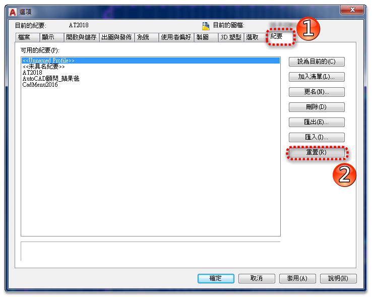

紀要(個案設定) >> 重置，方法如下：
請使用「選項」OPTIONS →「紀要(個案設定)」→ 將目前的紀要<<未具名紀要>> → 點選「重置」後 → 選擇 是 → 再把「紀要」設為目前的 → 關閉AutoCAD程式 → 重新開啟AutoCAD程式

在討論區發表問題時，請在主題前請加入[問題]，顏色請指定為[藍色]，論壇管理顧問會將您的主題置頂，方便大家即時討論。
[說明]發表主題前，請遵守相關要領!
https://www.autocad-tw.com/t1521-topic
謝謝您的配合~